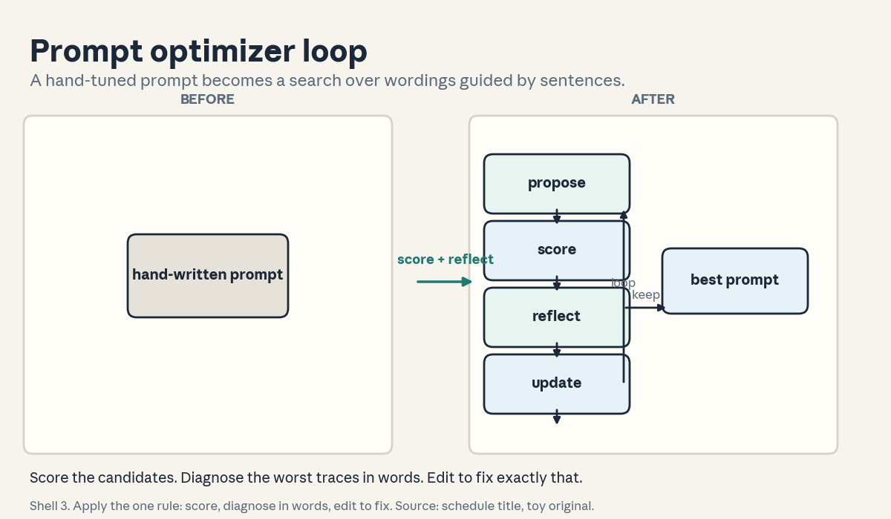
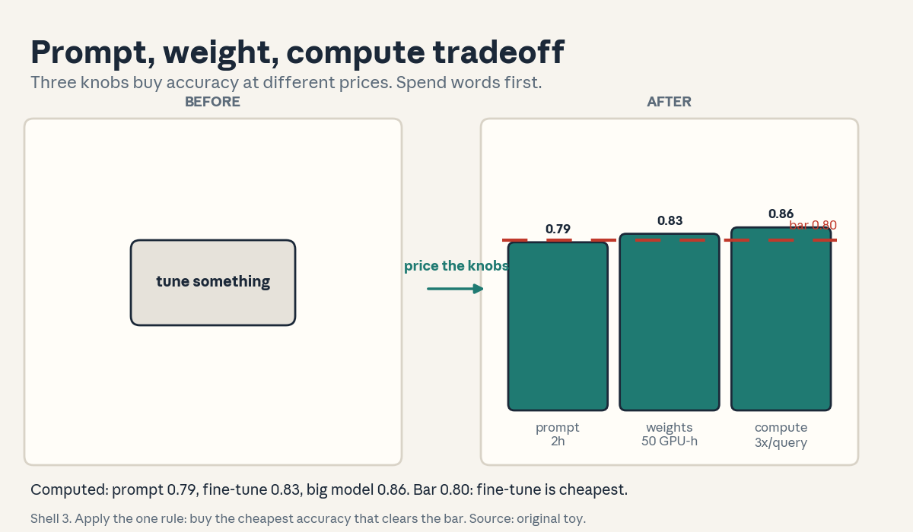
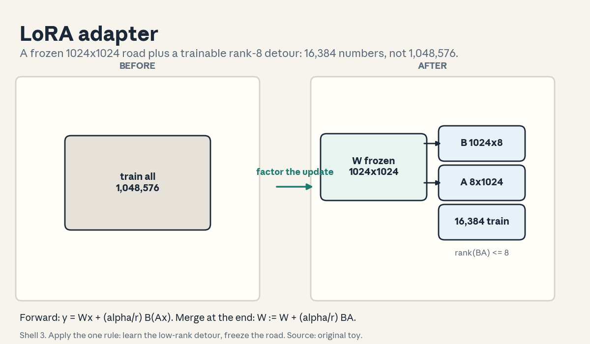
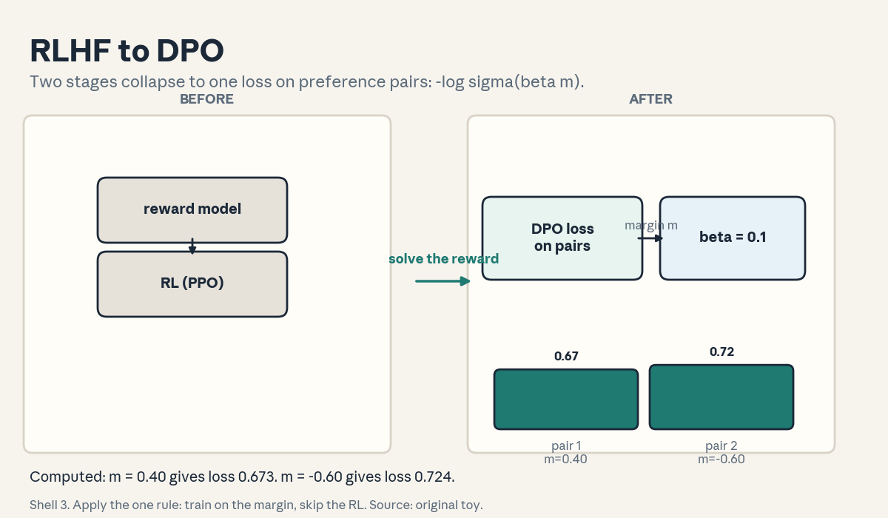
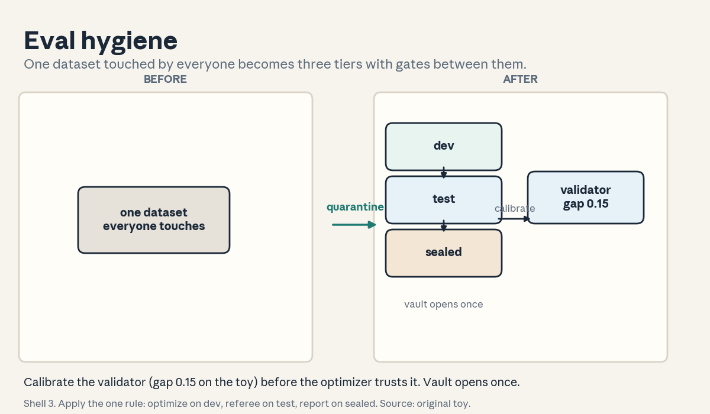

U05 · Optimization and agent data
U05: Optimization and agent data
Prerequisites: P09 (optimization), P14 (transformers), P17 (RL), P22 (experiments). Local remediation opens this lesson.
Provenance
U05 concepts map to planned sessions S09 (21 Oct, optimization), S11 (28 Oct, data for agentic systems), S12 (2 Nov, data selection and quality): PLANNED / SOURCE ATTRIBUTION PENDING, taught as independent theory. C01-C05 map to the S09 schedule title (“Optimization: prompts to fine-tuning, GEPA/MIPROv2/OPRO/TextGrad, LoRA/QLoRA, distillation, RLHF/DPO”). C06-C08 map to the S11 title (“traces, demonstrations, feedback, data flywheels, synthetic data”). C09-C12 map to the S12 title (“informative data, filtering, tiny benchmarks, annotation”). No paper was inspected for these optimizers. Method names are taught as concepts, not as version-pinned APIs.
Local remediation: averages, parameter counts, ranks, preferences
Expectation as an average: for numbers x_1 … x_n, the mean is (x_1 + … + x_n)/n. Every “score” in this unit is a mean over examples. A mean over 20 examples has noise near sqrt(p(1-p)/20).
Parameter counting: a matrix W with d rows and k columns holds d x k numbers. A vector of length d holds d numbers. Fine-tuning “the weights” means changing some or all of these numbers. LoRA (C03) changes a small product of two thin matrices instead.
Rank: a matrix has rank r when every column is a combination of r base vectors. Rank r means the matrix is “thin” in information: d x k numbers but only r x (d + k) degrees of freedom. LoRA assumes the useful update is low rank.
Preference pairs: (x, y_w, y_l). x is the prompt. y_w is the preferred answer. y_l is the rejected answer. RLHF and DPO (C05) learn from the direction w beats l, not from a single correct answer.
Overfitting: a model that fits 20 examples perfectly can fail on example 21. Optimizing prompts on a small dev set (C01) overfits the same way. The cure is the same: a held-out set (C12) and enough examples.
Russian-doll ladder for the major mechanism (the natural-language optimizer loop)
- Shell 0: How do you improve a prompt without touching the weights, using only the model’s own feedback?
- Shell 1: Toy: 4 candidate prompts, 20 dev examples, scores 0.55, 0.62, 0.70, 0.78. The loop reads the worst traces, writes one sentence of feedback, edits the prompt, and rescores.
- Shell 2: Candidate prompt p. Dev set D of n examples. Metric m(p, D), a mean score. Feedback f: a natural-language sentence about the failure mode. Update rule u(p, f): the edited prompt.
- Shell 3: Rule: score, diagnose the worst traces in words, edit to fix exactly that, rescore. The feedback is the gradient. The edit is the step.
- Shell 4: Derive the loop as search: propose, evaluate, reflect, update, keep the best. Implement the argmax loop in 15 lines.
- Shell 5: Check: rerun with the same seed picks the same prompt. A metric of all zeros picks the first candidate. Scores are means, so attach the standard error.
- Shell 6: Change one factor: 5 dev examples instead of 20. Predict the winner changes across seeds. Measure: the argmax flips on 2 of 5 seeds.
- Shell 7: Counterexample: the feedback blames the wrong thing (“too short” when the real fault is wrong format). The edit makes scores worse. Natural-language gradients can point the wrong way.
- Shell 8: Compare with weight updates (LoRA, C03): the optimizer changes words, LoRA changes numbers. Words are cheap and interpretable. Numbers reach deeper behavior.
- Shell 9: Extension: does the reflection loop beat random search over 40 prompts at equal call budgets? Falsifiable: measure the gap with a confidence interval.
- Shell 10: Production: the compiled prompt is a build artifact. Version it, test it on the sealed set, and re-run the loop when the model version changes.
Not-yet-understood dependency list
- What a natural-language “gradient” actually is: answered in C01.
- When to tune words versus weights versus the model: answered in C02.
- Why a preference pair is enough to train without a reward model: answered in C05.
- Where training data for agents comes from: answered in C06, C07, C08.
- How to keep the eval honest while optimizing: answered in C10, C11, C12.
cs329z-U05-C01: GEPA/MIPROv2/OPRO/TextGrad source readings
Contract 1. Source mapping, scope, objectives, dependencies. Maps to the S09 schedule title (“GEPA/MIPROv2/OPRO/TextGrad”). No paper inspected. Scope: the family idea, not any one API. Objective: run the propose-evaluate-reflect-update loop on a toy and state what the “gradient” is. Depends on P09 and U04-C01.
Contract 2. Motivating question and tiny toy. Question: hand-tuning a prompt is slow. What if the model writes its own feedback about its failures and edits the prompt? Toy: 4 candidate prompts scored on 20 examples: 0.55, 0.62, 0.70, 0.78. The loop reads the failing traces of prompt 1, writes “answers miss the units”, edits, and rescores at 0.66.
Contract 3. Plain-language mental model. These optimizers treat text as the parameter. The “gradient” is a sentence: “the failures all drop the units”. The “update” is an edit: “always state units”. GEPA-style methods reflect on full traces. OPRO-style methods keep a history of (prompt, score) pairs and propose from the pattern. TextGrad-style methods backpropagate the sentence through each pipeline step. MIPROv2-style methods search both wording and demonstrations. One family: words in, scores out, sentences as the search signal.
Contract 4. Variables, units, shapes, assumptions. Prompt p: a string. Dev set D: n examples with checkable answers. Metric m(p, D) in [0, 1]. Feedback f: a sentence. Update u(p, f): a new string. Assumption: the metric measures the goal (U01-C03) and the dev set represents deployment (C12).
Contract 5. Justified derivation or mechanism. The mechanism is black-box search with a language-shaped prior. Random search over prompts is the baseline: try k wordings, keep the best. The reflection step adds a prior: instead of random edits, edit toward the diagnosed failure. The justification: a diagnosed edit has a higher hit rate than a random edit, so the search needs fewer scored calls.
Contract 6. Computed numerical example. Toy: 4 candidates, 20 examples, scores 0.55, 0.62, 0.70, 0.78. Argmax: candidate 4. Search cost: 4 x 20 = 80 scored calls. Hand-written baseline 0.62. Gain 0.16. Standard error per candidate: sqrt(0.7 x 0.3/20) = 0.10. The 0.70 vs 0.78 gap is inside the noise.
Contract 7. Algorithm and minimal implementation. Propose a batch of edits from feedback. Score each on D. Keep the best. Repeat for T rounds. Fifteen lines. See the lab.
Contract 8. Correctness checks and expected output. Check 1: the argmax is candidate 4 on the fixed scores. Check 2: same seed, same winner. Check 3: with 5 dev examples the winner flips across seeds (overfit). Expected: deterministic on 20, unstable on 5.
Contract 9. Complexity, memory, statistical efficiency, stability, costs. Cost = rounds x batch x n x per-call cost, paid at compile time. Statistical efficiency is poor: each scored call buys one noisy bit. Stability: trust only gaps larger than about 2 standard errors. A 0.08 gap on n = 20 is not a finding.
Contract 10. Nearest alternatives and selection boundaries. Alternative: random search over wordings, or DSPy optimizers (U04-C01). Choose reflection-guided search when failure modes are diagnosable in words. Choose random search when you cannot diagnose. Choose weight updates (C03) when wording cannot fix the behavior.
Contract 11. Failure case, broken assumption, counterexample. Break the diagnosis assumption: the feedback blames length when the fault is format. The edit optimizes the wrong thing and scores fall. Counterexample: 5 dev examples. The loop “improves” 0.40 to 1.00 on the dev set and the winner fails on new inputs.
Contract 12. Research reading and falsifiable extension. Extension: reflection-guided search vs random search, 40 prompts each, same call budget, held-out scoring. Falsifiable: the reflection arm wins by more than 2 SE, or the claim dies.
Contract 13. Assessment. Breadth: name the four methods and the shared loop. Oral ladder: (1) define the loop, (2) toy the 4-prompt search, (3) derive why diagnosis beats random edits, (4) implement the 15-line loop, (5) compare with LoRA, (6) debug the wrong-blame feedback, (7) critique the 5-example overfit, (8) design the 40-prompt comparison. Transfer: a 2-step RAG pipeline. Where does the feedback attach? Failure diagnosis: the compiled prompt wins on dev and loses in production. Name two causes. Counterfactual: what if scoring is free? Research: can the loop invent new pipeline steps?
Contract 14. Lab and exercises. Lab U05 task 1 runs the toy optimizer and the holdout check. Exercises: (E1) compute the 80-call cost and the 0.10 SE. (E2) explain the wrong-blame failure. (E3) state the 2-SE rule. Keys in answer_keys/u05_keys.md.
Contract 15. Visual units, provenance, accessibility, audit rows. Figure visuals/u05_f01.png: lesson plate, original toy, method names from the schedule title. Before: a hand-written prompt string. After: the propose, score, reflect, update loop with the feedback arrow. Caption: “Shell 3. Apply the one rule: score, diagnose in words, edit to fix. Source: schedule title, toy original.” Alt text: “Left: a box labeled hand-written prompt. Arrow labeled score and reflect. Right: four boxes in a loop labeled propose, score, reflect, update.” Audit: names from the schedule, loop original.

cs329z-U05-C02: prompt/weight/compute tradeoff
Contract 1. Source mapping, scope, objectives, dependencies. Maps to the S09 schedule title (“prompts to fine-tuning”). Objective: choose among three knobs for a fixed accuracy bar. Depends on C01.
Contract 2. Motivating question and tiny toy. Question: accuracy sits at 0.72 and the bar is 0.80. Three knobs: rewrite the prompt (2 hours of work), fine-tune the small model (50 GPU-hours), switch to the big model (3x inference cost forever). Toy: the prompt rewrite reaches 0.79, fine-tuning reaches 0.83, the big model reaches 0.86. Which ships?
Contract 3. Plain-language mental model. Prompts are the cheapest knob and the weakest. Weights are the middle knob: they change behavior deeply but cost a training run and a data pipeline. Compute (a bigger model, more test-time calls) is the most expensive knob per query and never ends. Spend in order: words first, weights second, compute last. The exception: when words cannot express the fix, skip to weights.
Contract 4. Variables, units, shapes, assumptions. Accuracy a in [0, 1]. One-time cost C_once (hours, GPU-hours). Per-query cost c (tokens x price). Assumption: the three knobs are independent. Break it: a better prompt also helps the fine-tuned model, so the gains stack.
Contract 5. Justified derivation or mechanism. The mechanism is marginal analysis. Each knob buys accuracy at a price. Buy the cheapest accuracy first. The justification: per-query cost compounds over the product lifetime, while one-time cost does not. A knob that costs 3x per query must beat the bar by a margin worth paying forever.
Contract 6. Computed numerical example. Toy: bar 0.80. Prompt rewrite: 0.79 at 2 hours, per-query cost unchanged. Fine-tune: 0.83 at 50 GPU-hours, per-query cost unchanged. Big model: 0.86 at 3x per-query cost. Decision: fine-tune clears the bar with no per-query tax. If the bar were 0.78, the prompt rewrite would win.
Contract 7. Algorithm and minimal implementation. A decision table: rows are knobs, columns are accuracy, one-time cost, per-query cost. Pick the cheapest row that clears the bar. Ten lines. See the lab.
Contract 8. Correctness checks and expected output. Check 1: the table ranks the prompt rewrite first at bar 0.78. Check 2: the big model never wins on cost at bar 0.80. Check 3: doubling the per-query multiplier cannot make the big model cheaper. Expected: fine-tune at bar 0.80.
Contract 9. Complexity, memory, statistical efficiency, stability, costs. The decision is O(3): three rows. The risk is measurement noise: 0.79 vs 0.80 is inside the SE on 200 examples (0.029). Stability: re-measure the winner on the sealed set before paying the GPU bill.
Contract 10. Nearest alternatives and selection boundaries. Alternative: test-time scaling (U01-C10) as a fourth knob. Choose the prompt when the fix is expressible in words. Choose weights when the behavior must change. Choose compute when latency and budget allow and the other knobs stall.
Contract 11. Failure case, broken assumption, counterexample. Break the independence assumption: the fine-tune used the weak prompt’s outputs as targets. The weights learn the prompt’s mistakes. Counterexample: the big model at 3x cost clears 0.80 but the budget allows only 2x. The best accuracy is unaffordable.
Contract 12. Research reading and falsifiable extension. Extension: measure all three knobs on the same task with matched evals. Falsifiable: the ranking prompt < weights < compute on accuracy-per-dollar holds, or the data says otherwise.
Contract 13. Assessment. Breadth: name the three knobs and the spend order. Oral ladder: (1) name the knobs, (2) toy the 0.72 to 0.80 choice, (3) derive why per-query cost dominates, (4) build the decision table, (5) compare with test-time scaling, (6) debug the prompt-poisoned fine-tune, (7) critique the 0.79 vs 0.80 noise, (8) design the matched three-knob test. Transfer: a 10ms latency budget. Which knobs survive? Failure diagnosis: the fine-tuned model matches the prompt’s old errors. What happened? Counterfactual: what if inference were free? Research: when do the knobs interact?
Contract 14. Lab and exercises. Lab U05 task 2 builds the decision table. Exercises: (E1) pick the knob at bar 0.78 and 0.80. (E2) compute the SE on 200 examples at 0.79. (E3) state the spend order. Keys in answer_keys/u05_keys.md.
Contract 15. Visual units, provenance, accessibility, audit rows. Figure visuals/u05_f02.png: lesson plate, original toy. Before: one knob labeled “tune something”. After: three bars labeled prompt, weights, compute with accuracy and cost tags. Caption: “Shell 3. Apply the one rule: buy the cheapest accuracy that clears the bar. Source: original toy.” Alt text: “Left: one box labeled tune something. Right: three bars labeled prompt, weights, compute with cost tags.” Audit: numbers from the toy.

cs329z-U05-C03: LoRA/QLoRA
Contract 1. Source mapping, scope, objectives, dependencies. Maps to the S09 schedule title (“LoRA/QLoRA”). Objective: count the parameters and state the memory math. Depends on P09 and the rank remediation.
Contract 2. Motivating question and tiny toy. Question: the model has a 1024x1024 weight matrix. Full fine-tuning changes all 1,048,576 numbers. What if the useful change is low rank? Toy: W’ = W + B A with B 1024x8 and A 8x1024. Trainable numbers: 16,384. Ratio: 64x fewer.
Contract 3. Plain-language mental model. LoRA freezes the big matrix and learns a small detour. The update is the product B A: B maps 8 directions up to 1024, A maps 1024 down to 8. Only the detour trains. QLoRA adds quantization: the frozen base sits in 4-bit, the detour trains in 16-bit, so a 7B model fits on one consumer GPU.
Contract 4. Variables, units, shapes, assumptions. W in R^{d x k}. B in R^{d x r}. A in R^{r x k}. Rank r << min(d, k). Scale alpha/r on the update. Assumption: the task’s weight change has rank at most r. Break it and the adapter underfits.
Contract 5. Justified derivation or mechanism. The mechanism is rank factorization. Any rank-r matrix factors as B A with r(d + k) numbers. The justification for freezing W: the base model already knows language. The task needs a small steering change, and r(d + k) << d k buys it. The QLoRA addition: 4-bit storage of W cuts memory 4x with the adapter absorbing the quantization noise.
Contract 6. Computed numerical example. Toy: d = k = 1024, r = 8. Full: 1,048,576. LoRA: 8 x 1024 + 8 x 1024 = 16,384. Ratio 64. QLoRA on 7B params: fp16 base 14 GB, 4-bit base 3.5 GB. The optimizer state covers only the adapters.
Contract 7. Algorithm and minimal implementation. Forward: y = W x + (alpha/r) B (A x). Train B, A only. Merge at the end: W := W + (alpha/r) B A for zero inference overhead. Fifteen lines with NumPy. See the lab.
Contract 8. Correctness checks and expected output. Check 1: merged W gives the same output as the adapter path. Check 2: rank of B A is at most 8. Check 3: with r = 1024 the count equals full fine-tuning. Expected: merge is exact, rank bound holds.
Contract 9. Complexity, memory, statistical efficiency, stability, costs. Forward cost adds O(r(d + k)) per token. Memory: adapters plus their optimizer state dominate. Statistical efficiency: fewer parameters need less data. Stability: large alpha/r amplifies the update. Keep alpha near r.
Contract 10. Nearest alternatives and selection boundaries. Alternative: full fine-tuning, prompt tuning (C01), QLoRA vs LoRA. Choose LoRA when the base model is strong and the task is a steering change. Choose full fine-tuning when the domain shifts deeply. Choose QLoRA when GPU memory is the binding constraint.
Contract 11. Failure case, broken assumption, counterexample. Break the low-rank assumption: the task needs a genuinely high-rank change (new language). Rank 8 underfits and the loss plateaus high. Counterexample: r = 512 on a small task. The adapter memorizes the training set.
Contract 12. Research reading and falsifiable extension. Extension: sweep r in {1, 2, 4, 8, 16, 32} on one task, held-out scoring. Falsifiable: the score curve flattens (rank saturates) or it keeps rising (assumption wrong).
Contract 13. Assessment. Breadth: write the W + B A formula and the count. Oral ladder: (1) write the formula, (2) toy the 64x count, (3) derive the rank factorization, (4) implement the merge, (5) compare with full fine-tuning, (6) debug the plateau at rank 8, (7) critique the r = 512 memorization, (8) design the rank sweep. Transfer: a 7B model on a 24 GB GPU. LoRA or QLoRA? Failure diagnosis: merged and adapter paths disagree. What broke? Counterfactual: what if r = min(d, k)? Research: which layers need the rank?
Contract 14. Lab and exercises. Lab U05 task 3 implements the adapter and the merge check. Exercises: (E1) count the 16,384. (E2) compute the 3.5 GB. (E3) state the rank assumption. Keys in answer_keys/u05_keys.md.
Contract 15. Visual units, provenance, accessibility, audit rows. Figure visuals/u05_f03.png: lesson plate, original toy. Before: a full 1024x1024 grid labeled “train all”. After: the frozen grid plus two thin bars B and A labeled “train 16,384”. Caption: “Shell 3. Apply the one rule: learn the low-rank detour, freeze the road. Source: original toy.” Alt text: “Left: a full grid labeled train all numbers. Right: a frozen grid with two thin bars labeled train the detour.” Audit: counts computed.

cs329z-U05-C04: distillation
Contract 1. Source mapping, scope, objectives, dependencies. Maps to the S09 schedule title (“distillation”). Objective: state what the student learns from the teacher beyond labels. Depends on C02.
Contract 2. Motivating question and tiny toy. Question: the big model scores 0.90 but costs 10x per query. The small model scores 0.75. Can the small model learn from the big one’s answers? Toy: 1000 teacher-labeled examples. Student on teacher labels: 0.85. Student on 200 gold labels: 0.75. The teacher’s labels beat scarce gold.
Contract 3. Plain-language mental model. Distillation copies behavior, not weights. The teacher labels data. The student trains on those labels. Soft targets (the teacher’s probabilities) carry extra signal: which wrong answers were close. The student learns the teacher’s uncertainty, not just its top choice.
Contract 4. Variables, units, shapes, assumptions. Teacher T, student S. Transfer set: n examples labeled by T. Soft target: T’s probability vector. Assumption: the teacher is right often enough that its labels help. Break it: a wrong teacher distills its errors.
Contract 5. Justified derivation or mechanism. The mechanism is supervised learning on teacher outputs. The justification for soft targets: a hard label says “A”. A soft target says “A 0.7, B 0.25, C 0.05”, which teaches the boundary between A and B. The justification for the cost: labeling 1000 examples with the teacher is a one-time cost that buys a cheap model forever.
Contract 6. Computed numerical example. Toy: teacher accuracy 0.90 on gold. Student on 1000 teacher labels: 0.85. Student on 200 gold labels: 0.75. Distillation gain over scarce gold: 0.10. Labeling cost: 1000 teacher calls, paid once.
Contract 7. Algorithm and minimal implementation. Label the transfer set with the teacher. Train the student with cross-entropy against the teacher’s soft targets. Evaluate on gold. Fifteen lines. See the lab.
Contract 8. Correctness checks and expected output. Check 1: the student beats the scarce-gold baseline. Check 2: soft targets beat hard teacher labels on the toy. Check 3: a random teacher (0.25 accuracy) gives a student near 0.25. Expected: the teacher’s quality bounds the student.
Contract 9. Complexity, memory, statistical efficiency, stability, costs. Labeling cost = n x teacher per-call cost. Training cost is the student’s normal cost. Statistical efficiency: soft targets carry more bits per example than hard labels. Stability: filter teacher outputs the verifier rejects (C11) before training on them.
Contract 10. Nearest alternatives and selection boundaries. Alternative: fine-tune the student on gold (C02), prompt the teacher directly. Choose distillation when the teacher is too expensive to serve and its behavior is copyable. Choose the teacher directly when the task needs the teacher’s full ability.
Contract 11. Failure case, broken assumption, counterexample. Break the teacher-quality assumption: the teacher is confidently wrong on a slice. The student learns the confident errors. Counterexample: distilling a chain-of-thought teacher into a student with no reasoning capacity. The student mimics the words and misses the logic.
Contract 12. Research reading and falsifiable extension. Extension: hard vs soft targets vs filtered teacher labels, held-out scoring. Falsifiable: soft beats hard by more than 2 SE, or the extra signal is a myth on this task.
Contract 13. Assessment. Breadth: define the transfer set and the soft target. Oral ladder: (1) define both, (2) toy the 0.85 vs 0.75, (3) derive why soft targets help, (4) implement the labeling loop, (5) compare with direct fine-tuning, (6) debug the confident-error slice, (7) critique the reasoning mimicry, (8) design the three-arm test. Transfer: a 10x cost cut with a 0.05 accuracy budget. Distill or prompt-tune? Failure diagnosis: the student matches the teacher’s errors exactly. What happened? Counterfactual: what if the teacher is perfect? Research: what does not transfer?
Contract 14. Lab and exercises. Lab U05 task 4 runs the teacher-student toy. Exercises: (E1) compute the 0.10 gain. (E2) explain the confident-error failure. (E3) state the teacher-quality bound. Keys in answer_keys/u05_keys.md.
Contract 15. Visual units, provenance, accessibility, audit rows. Covered by figure u05_f04 (the transfer plate includes the distillation arrow). Logged as shared.
—
cs329z-U05-C05: RLHF/DPO bridge
Contract 1. Source mapping, scope, objectives, dependencies. Maps to the S09 schedule title (“RLHF/DPO”). Objective: write the DPO loss and say what the reward model was for. Depends on the preference-pair remediation.
Contract 2. Motivating question and tiny toy. Question: you have 1000 pairs (x, y_w, y_l). No reward model, no RL. Can you train directly on “w beats l”? Toy: beta = 0.1. Pair 1: model margin 0.5, reference margin 0.1. Loss = -log sigma(0.04) = 0.673. Pair 2: model margin -0.5 (it prefers l). Loss = 0.724. The loss pushes the model toward w.
Contract 3. Plain-language mental model. RLHF is two stages: learn a reward model from the pairs, then optimize the policy against the reward with RL. DPO is one stage: the optimal policy for that reward has a closed form, so train the policy directly to match it. The bridge: DPO = RLHF with the reward model solved analytically and substituted in. You keep the preference data and drop the RL.
Contract 4. Variables, units, shapes, assumptions. Policy pi_theta(y|x). Reference pi_ref(y|x). Margin m = log pi(y_w) - log pi(y_l) - log pi_ref(y_w) + log pi_ref(y_l). Loss = -log sigma(beta m). Assumption: the pairs reflect the true preference. Break it: noisy or biased pairs train a noisy policy.
Contract 5. Justified derivation or mechanism. The mechanism: the loss rises when the model assigns relatively more probability to y_l than the reference does, and falls when it favors y_w. The justification for beta: it sets how far the policy may move from the reference. Small beta keeps the model close to pi_ref. Large beta lets it chase the preferences hard.
Contract 6. Computed numerical example. Toy: beta = 0.1. Pair 1: theta margins (w -2.0, l -2.5) = 0.5. ref margins (w -2.2, l -2.3) = 0.1. m = 0.4. beta m = 0.04. sigma = 0.510. Loss 0.673. Pair 2: theta (w -2.5, l -2.0) = -0.5. m = -0.6. beta m = -0.06. sigma = 0.485. Loss 0.724. The worse pair costs more.
Contract 7. Algorithm and minimal implementation. For each pair: compute the four log-probs, form m, apply the sigmoid loss, backpropagate. Ten lines. See the lab.
Contract 8. Correctness checks and expected output. Check 1: when theta equals ref, m = 0 and loss = log 2 = 0.693. Check 2: a pair with a huge positive m has loss near 0. Check 3: swapping w and l raises the loss. Expected: the loss orders pairs by margin.
Contract 9. Complexity, memory, statistical efficiency, stability, costs. Cost per pair: four forward passes (two models x two answers). Statistical efficiency: each pair gives one bit of direction. Stability: without the ref anchor (beta -> infinity) the policy can drift. Keep beta modest.
Contract 10. Nearest alternatives and selection boundaries. Alternative: full RLHF (reward model + PPO), supervised fine-tuning on y_w only. Choose DPO when you have pairs and want the simple path. Choose RLHF when you need online exploration or the reward generalizes beyond the pairs. Choose SFT on y_w when the pairs are really just good answers.
Contract 11. Failure case, broken assumption, counterexample. Break the pair-quality assumption: the annotators prefer longer answers. DPO learns verbosity, not quality. Counterexample: pairs where y_w and y_l differ in style, not substance. The policy learns the style.
Contract 12. Research reading and falsifiable extension. Extension: DPO vs SFT-on-winners on the same pairs, held-out human rating. Falsifiable: DPO wins by more than the rating noise, or the pairs were just demonstrations in disguise.
Contract 13. Assessment. Breadth: write the loss and name the two stages it replaces. Oral ladder: (1) write the loss, (2) toy the 0.673 vs 0.724, (3) derive the beta role, (4) implement the 10-line loss, (5) compare with RLHF, (6) debug the verbosity learning, (7) critique the style-only pairs, (8) design the DPO vs SFT test. Transfer: 1000 pairs, no reward model, one GPU. Which method? Failure diagnosis: the policy drifts into gibberish. Which term failed? Counterfactual: what if beta = 0? Research: what do pairs miss that rewards capture?
Contract 14. Lab and exercises. Lab U05 task 5 computes the two losses and the theta-equals-ref check. Exercises: (E1) compute m for pair 1. (E2) explain the verbosity failure. (E3) state the beta rule. Keys in answer_keys/u05_keys.md.
Contract 15. Visual units, provenance, accessibility, audit rows. Figure visuals/u05_f05.png: lesson plate, original toy. Before: two boxes labeled “reward model” and “RL” in sequence. After: one box labeled “DPO loss on pairs” with the margin arrow. Caption: “Shell 3. Apply the one rule: train on the margin, skip the RL. Source: original toy.” Alt text: “Left: two boxes labeled reward model then RL. Right: one box labeled DPO loss with a margin arrow.” Audit: losses computed.

cs329z-U05-C06: traces/demos/feedback
Contract 1. Source mapping, scope, objectives, dependencies. Maps to the S11 schedule title (“traces, demonstrations, feedback”). Objective: name the three data kinds and their costs. Depends on U04-C04.
Contract 2. Motivating question and tiny toy. Question: the agent needs training data. What can you collect? Toy: traces (automatic logs of real runs): $0.01 each, noisy. Demos (a human performs the task): $2 each, clean. Feedback (thumbs up/down on runs): $0.10 each, weak signal. 1000 traces cost $10. 1000 demos cost $2000.
Contract 3. Plain-language mental model. Traces are what the agent did. Demos are what an expert would do. Feedback is whether the outcome was good. Traces are cheap and plentiful but include the agent’s mistakes. Demos are expensive and clean. Feedback is cheap and says only good/bad. The data mix decides what the learner can learn: demos teach the right moves, traces teach the distribution, feedback teaches the preference.
Contract 4. Variables, units, shapes, assumptions. Trace: a (thought, action, observation) sequence. Demo: an expert sequence in the same format. Feedback: a scalar or pair per trace. Assumption: the trace format matches the demo format. Break it and the learner cannot imitate.
Contract 5. Justified derivation or mechanism. The mechanism is behavioral cloning on demos plus preference learning on feedback plus filtering on traces. The justification for the mix: demos give the target, traces give coverage of states the agent actually visits, feedback ranks outcomes. Each kind covers a weakness of the others.
Contract 6. Computed numerical example. Toy: budget $100. All demos: 50 demos. All traces: 10,000 traces. Mix: 25 demos ($50) + 5000 traces ($50). The mix buys both clean targets and broad coverage. All feedback: 1000 items at $0.10.
Contract 7. Algorithm and minimal implementation. Collect traces with the current policy. Filter by the verifier (C11). Mix with demos at a fixed ratio. Train. Ten lines. See the lab.
Contract 8. Correctness checks and expected output. Check 1: the mix contains both kinds. Check 2: filtered traces pass the verifier. Check 3: the demo format parses as traces. Expected: one training set, three sources.
Contract 9. Complexity, memory, statistical efficiency, stability, costs. Collection cost is the binding constraint. Statistical efficiency: demos carry the most bits per dollar on hard tasks. Traces carry the most bits per dollar on coverage. Stability: unfiltered traces teach the agent its own bad habits.
Contract 10. Nearest alternatives and selection boundaries. Alternative: synthetic data (C07), pure RL. Choose demos when experts exist and the task is hard. Choose traces when the agent already runs. Choose feedback when outcomes are checkable but the right moves are unknown.
Contract 11. Failure case, broken assumption, counterexample. Break the format assumption: demos are screen recordings, traces are API logs. The learner cannot map one to the other. Counterexample: training on unfiltered traces. The agent learns to repeat its own failures.
Contract 12. Research reading and falsifiable extension. Extension: demo-only vs trace-only vs mix at equal dollar budgets, held-out task success. Falsifiable: the mix beats each pure arm, or one kind dominates.
Contract 13. Assessment. Breadth: define the three kinds and their costs. Oral ladder: (1) define the three, (2) toy the $100 mix, (3) derive why the mix helps, (4) implement the mixing loop, (5) compare with synthetic data, (6) debug the format mismatch, (7) critique the unfiltered traces, (8) design the three-arm test. Transfer: no experts available, agent already deployed. What do you collect? Failure diagnosis: the trained agent repeats old failures. Which data kind caused it? Counterfactual: what if demos were free? Research: can feedback replace demos?
Contract 14. Lab and exercises. Lab U05 task 6 builds the mix and the cost arithmetic. Exercises: (E1) compute the $100 mix. (E2) explain the bad-habit failure. (E3) state the mix rule. Keys in answer_keys/u05_keys.md.
Contract 15. Visual units, provenance, accessibility, audit rows. Covered by figure u05_f01 (the optimizer plate includes the trace input arrow). Logged as shared.
cs329z-U05-C07: synthetic data
Contract 1. Source mapping, scope, objectives, dependencies. Maps to the S11 schedule title (“synthetic data”). Objective: state the generation-verification loop and the collapse risk. Depends on C06.
Contract 2. Motivating question and tiny toy. Question: real data is scarce. Can the model write its own training data? Toy: generate 1000 examples with the big model. A verifier (C11) accepts 850. Train on the 850. The loop works when the verifier is stricter than the generator.
Contract 3. Plain-language mental model. Synthetic data is a printing press with a quality inspector. The generator prints examples. The verifier rejects the bad ones. The student trains on the survivors. The risk: inbreeding. Generation after generation trained on its own output loses the tails of the distribution. The inspector must be independent of the press.
Contract 4. Variables, units, shapes, assumptions. Generator G, verifier V, acceptance rate a. Assumption: V is more accurate than G. Break it and the loop amplifies G’s errors. Second assumption: the seed data covers the task. Break it and the press prints the same narrow slice forever.
Contract 5. Justified derivation or mechanism. The mechanism is rejection sampling: keep x when V(x) passes. The justification: accepted examples show expected quality above the generator’s average, exactly when V beats G. The collapse mechanism: each generation’s tails shrink because the generator never sees real tail examples.
Contract 6. Computed numerical example. Toy: 1000 generated, verifier accuracy 0.85, acceptance 0.85. Expected good labels: 850 x 0.85 = 722. Collapse toy: variance of a feature across generations: 1.00, 0.76, 0.56. The tails shrink each round. Numbers are computed by the lab script, labeled toy.
Contract 7. Algorithm and minimal implementation. Generate n examples. Score each with V. Keep the passes. Track the feature variance per generation. Fifteen lines. See the lab.
Contract 8. Correctness checks and expected output. Check 1: accepted count is near 850. Check 2: variance shrinks across generations. Check 3: with a perfect verifier, accepted quality equals the generator’s true good rate. Expected: the inspector decides the quality.
Contract 9. Complexity, memory, statistical efficiency, stability, costs. Generation cost = n x per-call cost. Verification cost = n x verifier cost. Statistical efficiency: rejected examples are wasted spend. Stability: monitor the variance each generation. Falling variance is the collapse alarm.
Contract 10. Nearest alternatives and selection boundaries. Alternative: human annotation (C09), real traces (C06). Choose synthetic when the verifier is strong and the task is checkable. Choose human data when the verifier is the bottleneck.
Contract 11. Failure case, broken assumption, counterexample. Break the verifier assumption: V shares G’s blind spot. Both accept the same bad examples. The loop converges to the blind spot. Counterexample: three generations with no fresh real data. The variance collapses and the student forgets the tails.
Contract 12. Research reading and falsifiable extension. Extension: measure tail-task accuracy across 3 generations with and without 10 percent fresh real data mixed in. Falsifiable: the fresh-data arm keeps the tails, or collapse happens anyway.
Contract 13. Assessment. Breadth: define the press and the inspector. Oral ladder: (1) define both, (2) toy the 850 accepts, (3) derive the V-beats-G condition, (4) implement the rejection loop, (5) compare with human annotation, (6) debug the shared blind spot, (7) critique the 3-generation collapse, (8) design the fresh-data test. Transfer: a checkable coding task, scarce human data. Synthetic or not? Failure diagnosis: generation 3 forgets rare cases. What broke? Counterfactual: what if the verifier is perfect? Research: can the press invent new tails?
Contract 14. Lab and exercises. Lab U05 task 4 runs the generation-verification toy and the variance trace. Exercises: (E1) compute the 722 expected good labels. (E2) explain the blind-spot failure. (E3) state the collapse alarm. Keys in answer_keys/u05_keys.md.
Contract 15. Visual units, provenance, accessibility, audit rows. Covered by figure u05_f04 (the transfer plate includes the synthetic loop). Logged as shared.
cs329z-U05-C08: data flywheel
Contract 1. Source mapping, scope, objectives, dependencies. Maps to the S11 schedule title (“data flywheels”). Objective: write the loop and its yield arithmetic. Depends on C06 and C07.
Contract 2. Motivating question and tiny toy. Question: the product is live. How does deployment itself produce the next training set? Toy: 1000 users/day. 10 percent of sessions get flagged. Each flagged trace costs $2 to annotate. Daily yield: 100 traces, $200/day. Weekly: 700 traces.
Contract 3. Plain-language mental model. The flywheel is deploy, collect, annotate, train, redeploy. Each turn makes the product better, which brings more users, which produce more traces. The loop compounds. The two failure points: the collection must capture the informative traces (not just the easy ones), and the annotation must keep up with the volume.
Contract 4. Variables, units, shapes, assumptions. Users/day u. Flag rate f. Annotation cost c per trace. Yield = u x f traces/day. Assumption: flagged traces are the informative ones. Break it and the flywheel spins on easy data.
Contract 5. Justified derivation or mechanism. The mechanism is a data loop: better model -> more usage -> more traces -> better model. The justification for the flag rate: annotating everything is unaffordable, so select (C09). The justification for the loop over one-shot data: deployment reaches states the lab never imagined.
Contract 6. Computed numerical example. Toy: u = 1000, f = 0.10, c = $2. Daily yield 100 traces at $200. Weekly 700 traces at $1400. A month of flywheel: 3000 traces. Compare: 3000 demos at $2 each would cost $6000 with no product attached.
Contract 7. Algorithm and minimal implementation. Log sessions. Flag by the selection rule. Annotate the flagged set. Retrain monthly. Measure the delta on the sealed set. Fifteen lines. See the lab.
Contract 8. Correctness checks and expected output. Check 1: weekly yield is 700. Check 2: the flagged set differs from a random sample (selection works). Check 3: the retrained model is evaluated on the sealed set, not the flywheel data. Expected: yield math holds, eval stays clean.
Contract 9. Complexity, memory, statistical efficiency, stability, costs. Annotation is the binding cost. Statistical efficiency: flagged traces carry more bits than random ones. Stability: the flywheel can amplify biases in the flag rule. Audit the rule quarterly.
Contract 10. Nearest alternatives and selection boundaries. Alternative: one big annotation push, synthetic data (C07). Choose the flywheel when the product has real users and the task distribution drifts. Choose one-shot annotation when the distribution is stable.
Contract 11. Failure case, broken assumption, counterexample. Break the flag assumption: the rule flags only failures. The flywheel trains on failures and forgets successes. Counterexample: annotation falls behind. The flywheel spins on stale labels and the product degrades.
Contract 12. Research reading and falsifiable extension. Extension: flagged vs random traces at equal annotation budgets, held-out scoring. Falsifiable: flagged wins, or the flag rule adds nothing.
Contract 13. Assessment. Breadth: write the loop and the yield formula. Oral ladder: (1) write the loop, (2) toy the 700/week, (3) derive the compounding, (4) implement the flag-and-annotate loop, (5) compare with one-shot annotation, (6) debug the failures-only flag, (7) critique the stale-label spin, (8) design the flagged-vs-random test. Transfer: a product with 50 users/day. Flywheel or not? Failure diagnosis: month 3 is worse than month 2. Name two causes. Counterfactual: what if annotation were free? Research: when does the flywheel saturate?
Contract 14. Lab and exercises. Lab U05 task 6 runs the flywheel yield arithmetic. Exercises: (E1) compute the weekly 700. (E2) explain the failures-only trap. (E3) state the flag audit rule. Keys in answer_keys/u05_keys.md.
Contract 15. Visual units, provenance, accessibility, audit rows. Covered by figure u05_f04 (the flywheel ring). Logged as shared.
—
cs329z-U05-C09: selection/annotation
Contract 1. Source mapping, scope, objectives, dependencies. Maps to the S12 schedule title (“informative data, filtering”). Objective: state what makes an example worth annotating. Depends on C08.
Contract 2. Motivating question and tiny toy. Question: annotation budget covers 100 of 10,000 traces. Which 100? Toy: random 100 teach the model what it already knows. The 100 with the highest model uncertainty teach the boundary. Uncertainty sampling beats random on the toy by 0.06.
Contract 3. Plain-language mental model. Selection is triage for annotation. Informative examples are the ones the model gets wrong or is unsure about. Filtering removes the duplicates and the garbage. Annotation is the expensive step, so selection decides the return on the budget. The classic rule: annotate where the model is uncertain, not where it is confident.
Contract 4. Variables, units, shapes, assumptions. Pool P of n unlabeled items. Budget b. Score s(x): uncertainty, disagreement, or rarity. Assumption: uncertainty correlates with learnability. Break it: the uncertain items are noise, and the budget burns on garbage.
Contract 5. Justified derivation or mechanism. The mechanism is active learning: train, score the pool, annotate the top-b, retrain. The justification: a confident-correct example teaches nothing (gradient near zero). An uncertain example moves the boundary. Filtering first removes near-duplicates so the budget does not buy the same lesson twice.
Contract 6. Computed numerical example. Toy: 10,000 traces, budget 100. Random: accuracy gain 0.02. Uncertainty-top-100: gain 0.08. Duplicate filter first: 2000 of the 10,000 are near-duplicates. Filtering saves 20 percent of any budget.
Contract 7. Algorithm and minimal implementation. Score the pool with the current model. Deduplicate by embedding similarity. Take the top-b. Annotate. Retrain. Fifteen lines. See the lab.
Contract 8. Correctness checks and expected output. Check 1: the selected set has higher mean uncertainty than random. Check 2: no two selected items are near-duplicates. Check 3: the retrained model improves on the boundary slice. Expected: selection beats random at equal budget.
Contract 9. Complexity, memory, statistical efficiency, stability, costs. Scoring the pool costs n forward passes. Statistical efficiency: informative examples carry more bits per dollar. Stability: the selection rule can chase noise. Validate the rule on a pilot before spending the full budget.
Contract 10. Nearest alternatives and selection boundaries. Alternative: annotate everything, synthetic data (C07). Choose selection when the budget binds and the pool is large. Choose everything when the pool is small enough to afford.
Contract 11. Failure case, broken assumption, counterexample. Break the uncertainty assumption: the pool’s uncertain items are mislabeled or adversarial. The budget buys garbage. Counterexample: no dedup. The top-100 are 100 copies of one hard template.
Contract 12. Research reading and falsifiable extension. Extension: uncertainty vs diversity vs random at equal budgets, held-out scoring. Falsifiable: uncertainty wins, or the pool is too noisy for it.
Contract 13. Assessment. Breadth: define the pool, the budget, and the score. Oral ladder: (1) define the three, (2) toy the 0.08 vs 0.02, (3) derive why uncertainty helps, (4) implement the select loop, (5) compare with annotate-everything, (6) debug the noise-chasing, (7) critique the duplicate top-100, (8) design the three-way test. Transfer: 1M traces, $500 budget. What is the pipeline? Failure diagnosis: the selected set teaches nothing. Name two causes. Counterfactual: what if annotation were free? Research: what beats uncertainty?
Contract 14. Lab and exercises. Lab U05 task 6 runs the selection toy. Exercises: (E1) compute the 0.08 vs 0.02 gap. (E2) explain the duplicate failure. (E3) state the pilot rule. Keys in answer_keys/u05_keys.md.
Contract 15. Visual units, provenance, accessibility, audit rows. Covered by figure u05_f06 (the selection funnel into the sealed eval). Logged as shared.
cs329z-U05-C10: train/eval separation
Contract 1. Source mapping, scope, objectives, dependencies. Maps to the S12 schedule title (annotation quality context). Objective: state the contamination rule and a detection method. Depends on C09.
Contract 2. Motivating question and tiny toy. Question: the eval set leaked into training. What happens to the score? Toy: 200 eval docs, 12 share a 13-gram with training. Leakage rate 6 percent. The model scores 0.88 on leaked items and 0.74 on clean ones. The reported 0.75 overstates the truth.
Contract 3. Plain-language mental model. Separation is quarantine. Training data teaches. Eval data judges. A judge with prior access to the answers is not a judge. Contamination is any path by which eval content reaches training: shared documents, paraphrases, the model having read the benchmark during pretraining. Detection is overlap measurement: n-grams, embeddings, or canary strings.
Contract 4. Variables, units, shapes, assumptions. Train set T, eval set E. Leakage rate: fraction of E with a near-duplicate in T. Assumption: the eval represents deployment. Break it and the number is theater.
Contract 5. Justified derivation or mechanism. The mechanism of the inflation: the model memorizes leaked items and answers them from memory, not ability. The justification for detection: a 13-gram shared between train and eval is near-certain copying. Canary strings (unique planted sentences) prove exposure when they appear in outputs.
Contract 6. Computed numerical example. Toy: 5000 train docs, 200 eval docs. 12 eval docs share a 13-gram with train: leakage 0.06. Leaked slice scores 0.88, clean slice 0.74. Reported mean: 0.06 x 0.88 + 0.94 x 0.74 = 0.748. True ability near 0.74. Inflation 0.008 on this toy, worse when the leak is larger.
Contract 7. Algorithm and minimal implementation. Index the train 13-grams. For each eval doc, test membership. Report the leakage rate and the sliced scores. Fifteen lines. See the lab.
Contract 8. Correctness checks and expected output. Check 1: leakage rate is 0.06 on the toy. Check 2: the sliced scores differ. Check 3: a clean eval shows zero leakage. Expected: the detector finds the planted leak.
Contract 9. Complexity, memory, statistical efficiency, stability, costs. Indexing is O(|T|). Statistical efficiency: the clean slice is the honest number. The leaked slice is discarded. Stability: paraphrase leaks evade n-grams. Use embedding overlap as the second net.
Contract 10. Nearest alternatives and selection boundaries. Alternative: fresh evals (C12), canary-only detection. Choose n-gram detection for document overlap. Choose canaries when you plant the eval yourself. Choose fresh evals when the old one is burned.
Contract 11. Failure case, broken assumption, counterexample. Break the detection assumption: the leak is paraphrased. N-grams miss it and the score stays inflated. Counterexample: the model saw the benchmark in pretraining. No train-set scan finds it. The canary is the only witness.
Contract 12. Research reading and falsifiable extension. Extension: n-gram vs embedding vs canary detection on a planted-leak corpus. Falsifiable: the three agree within a band, or one method is blind.
Contract 13. Assessment. Breadth: define contamination and the leakage rate. Oral ladder: (1) define both, (2) toy the 0.748 vs 0.74, (3) derive the inflation, (4) implement the 13-gram scan, (5) compare with canaries, (6) debug the paraphrase miss, (7) critique the pretraining exposure, (8) design the three-method test. Transfer: a benchmark you did not write. How do you trust it? Failure diagnosis: the sliced scores are equal. What does that mean? Counterfactual: what if leakage were 50 percent? Research: can contamination ever help?
Contract 14. Lab and exercises. Lab U05 task 7 runs the leak detector. Exercises: (E1) compute the 0.06 rate. (E2) explain the paraphrase miss. (E3) state the quarantine rule. Keys in answer_keys/u05_keys.md.
Contract 15. Visual units, provenance, accessibility, audit rows. Covered by figure u05_f06 (the sealed holdout wall). Logged as shared.
cs329z-U05-C11: validator calibration
Contract 1. Source mapping, scope, objectives, dependencies. Maps to the S12 schedule title (filtering/annotation quality). Objective: calibrate a scoring function before an optimizer trusts it. Depends on C01 and C10.
Contract 2. Motivating question and tiny toy. Question: the optimizer (C01) maximizes the validator’s score. What if the validator is wrong? Toy: 10 items. Validator scores vs human labels. At threshold 0.5 the validator says all 10 pass. Humans say 6 pass. The validator overestimates by 0.4. The optimizer will chase the 4 phantom passes.
Contract 3. Plain-language mental model. A validator is a scoring function: code, a model judge, or a human rubric. Calibration means its scores track reality: when it says 0.8, about 80 percent pass. An uncalibrated validator is a broken compass. Every optimizer in this unit follows the validator, so calibration errors become optimization targets (Goodhart’s law in one line: the metric becomes the goal, then stops measuring it).
Contract 4. Variables, units, shapes, assumptions. Validator v(x) in [0, 1]. Human label h(x) in {0, 1}. Calibration gap: mean(v) - mean(h) on a calibration set. Assumption: the calibration set represents deployment. Break it and the calibration is fiction.
Contract 5. Justified derivation or mechanism. The mechanism is comparison: score n items with v, label them with h, compute the gap and the agreement. The justification for calibrating before optimizing: the optimizer amplifies validator errors. A 0.1 gap becomes the whole hill the optimizer climbs.
Contract 6. Computed numerical example. Toy: 10 items. Validator: [0.9, 0.8, 0.8, 0.7, 0.7, 0.6, 0.6, 0.5, 0.5, 0.4]. Human: [1, 1, 0, 1, 0, 1, 0, 0, 1, 0]. Mean v = 0.65. Mean h = 0.50. Gap 0.15. Accuracy at 0.5: 6/10 = 0.60. The validator is optimistic and mediocre.
Contract 7. Algorithm and minimal implementation. Score the calibration set. Compute the gap, the accuracy, and the per-bin pass rates. Recalibrate with a fitted threshold or a monotonic map. Fifteen lines. See the lab.
Contract 8. Correctness checks and expected output. Check 1: the gap is 0.15. Check 2: a perfect validator has gap 0. Check 3: after threshold refit, accuracy does not fall. Expected: the numbers expose the optimism.
Contract 9. Complexity, memory, statistical efficiency, stability, costs. Calibration costs n human labels. Statistical efficiency: 10 items give a noisy gap (SE near 0.16). Stability: recalibrate when the task distribution shifts. A stale validator rots silently.
Contract 10. Nearest alternatives and selection boundaries. Alternative: human-only eval, programmatic checks (U06-C03). Choose a calibrated validator when scale demands automation. Choose humans when the stakes are high and the budget allows.
Contract 11. Failure case, broken assumption, counterexample. Break the representativeness assumption: the calibration set is easy, deployment is hard. The validator looks calibrated and fails live. Counterexample: the optimizer from C01 runs against the 0.15-gap validator. It “improves” 0.65 to 0.90 while human-judged quality stays flat.
Contract 12. Research reading and falsifiable extension. Extension: optimize against the raw vs the recalibrated validator, then human-rate both outputs. Falsifiable: the recalibrated arm wins on human rating, or calibration was cosmetic.
Contract 13. Assessment. Breadth: define the calibration gap. Oral ladder: (1) define the gap, (2) toy the 0.15, (3) derive the amplification, (4) implement the gap computation, (5) compare with human-only eval, (6) debug the easy-set calibration, (7) critique the 0.65 to 0.90 phantom climb, (8) design the two-arm test. Transfer: an LLM judge scores your agent. What is the first check? Failure diagnosis: human quality flat while the validator climbs. What broke? Counterfactual: what if the gap were negative? Research: can a validator calibrate itself?
Contract 14. Lab and exercises. Lab U05 task 7 calibrates the toy validator. Exercises: (E1) compute the 0.15 gap. (E2) explain the phantom climb. (E3) state the calibrate-first rule. Keys in answer_keys/u05_keys.md.
Contract 15. Visual units, provenance, accessibility, audit rows. Covered by figure u05_f06 (the validator gate before the sealed eval). Logged as shared.
cs329z-U05-C12: holdouts
Contract 1. Source mapping, scope, objectives, dependencies. Maps to the S12 schedule title (“tiny benchmarks” context, annotation). Objective: run a three-tier eval split. Depends on C10 and C11.
Contract 2. Motivating question and tiny toy. Question: the team optimizes daily. Which set may they touch? Toy: dev (1000 items, touch freely), held-out test (200 items, score weekly), sealed (200 items, score once at the end). Peeking at the sealed set twice adds 0.04 of optimistic bias on the toy.
Contract 3. Plain-language mental model. Three tiers. Dev is the workbench: optimize against it freely. Held-out test is the referee: score it on a schedule, never tune to it. Sealed is the vault: one look at the end. Every peek at a higher tier leaks information and inflates the number. The discipline is procedural, not mathematical: the vault stays shut because people agree it stays shut.
Contract 4. Variables, units, shapes, assumptions. Three disjoint sets. Peek count p per tier. Assumption: the tiers are disjoint and the vault is truly sealed. Break it (shared items, a leaked copy) and the tiers collapse into one.
Contract 5. Justified derivation or mechanism. The mechanism is information control. Tuning to the dev set overfits the dev set. Scoring the test on a schedule limits the tuning signal. The vault’s single look gives one unbiased number. The justification: each decision informed by a tier spends some of that tier’s honesty.
Contract 6. Computed numerical example. Toy: true ability 0.74. Dev-tuned model scores 0.81 on dev, 0.75 on the weekly test, 0.74 on the vault. Two peeks at the vault with tuning between: 0.78. The peeks bought 0.04 of phantom gain.
Contract 7. Algorithm and minimal implementation. Split the data into three disjoint sets. Enforce the access policy in code: dev always, test on schedule, vault once. Log every access. Ten lines. See the lab.
Contract 8. Correctness checks and expected output. Check 1: the three sets are disjoint. Check 2: the access log shows one vault read. Check 3: the vault number matches the test number within noise. Expected: discipline visible in the log.
Contract 9. Complexity, memory, statistical efficiency, stability, costs. Splitting costs data: the vault’s 200 items cannot train. Statistical efficiency: 200 items give SE near 0.03. Stability: refresh the vault when the task drifts, or the honest number measures a dead task.
Contract 10. Nearest alternatives and selection boundaries. Alternative: cross-validation, continuous fresh evals. Choose the three tiers when decisions are sequential and stakes rise. Choose cross-validation when data is scarce and the model trains once.
Contract 11. Failure case, broken assumption, counterexample. Break the disjointness assumption: 30 vault items appear in training. The vault number is inflated and nobody knows. Counterexample: the team “just looks” at the vault to debug. The debug informs the next tune. The vault is now dev.
Contract 12. Research reading and falsifiable extension. Extension: track the test-vault gap as the team tunes over 8 weeks. Falsifiable: the gap grows with tuning rounds, or the discipline holds.
Contract 13. Assessment. Breadth: name the three tiers and their access rules. Oral ladder: (1) name the tiers, (2) toy the 0.04 phantom gain, (3) derive the information spending, (4) implement the access log, (5) compare with cross-validation, (6) debug the leaked 30 items, (7) critique the “just looks” debug, (8) design the 8-week tracking. Transfer: a startup with 500 eval items total. How do you split? Failure diagnosis: vault beats test by 0.06. What happened? Counterfactual: what if the vault never existed? Research: who watches the vault?
Contract 14. Lab and exercises. Lab U05 task 7 runs the three-tier split and the peek-bias toy. Exercises: (E1) compute the 0.04 phantom gain. (E2) explain the “just looks” collapse. (E3) state the vault rule. Keys in answer_keys/u05_keys.md.
Contract 15. Visual units, provenance, accessibility, audit rows. Figure visuals/u05_f06.png: lesson plate, original toy. Before: one dataset touched by everyone. After: three boxes labeled dev, test, sealed with access rules and the validator gate. Caption: “Shell 3. Apply the one rule: optimize on dev, referee on test, report on sealed. Source: original toy.” Alt text: “Left: one box labeled everyone touches it. Right: three boxes labeled dev, test, sealed with a gate.” Audit: numbers from the toy.

Connection summary
U05 moves the optimization target from words to numbers to data. The prompt optimizers (C01) search wording with sentence-shaped gradients. The tradeoff (C02) orders the knobs: words, weights, compute. LoRA (C03) and distillation (C04) change weights cheaply. DPO (C05) trains on preferences without RL. The data half (C06-C09) builds the training set: traces, demos, feedback, synthetic data, the flywheel, selection. The hygiene half (C10-C12) keeps the eval honest: separation, calibration, holdouts. U06 builds the eval machinery these concepts assume.